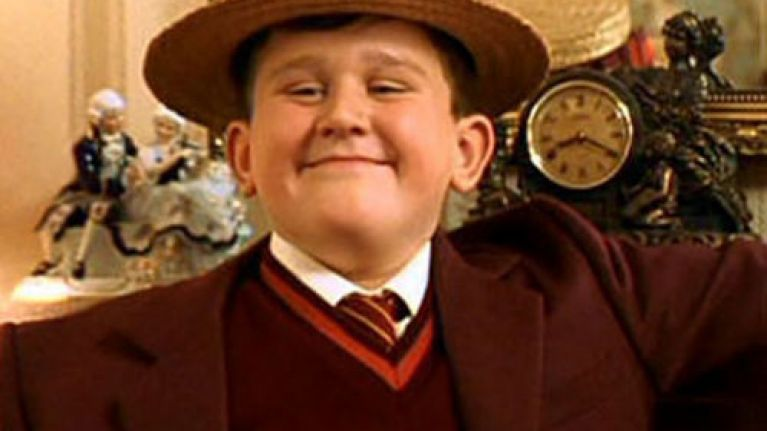
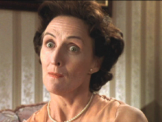
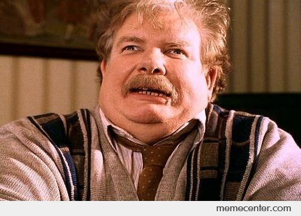
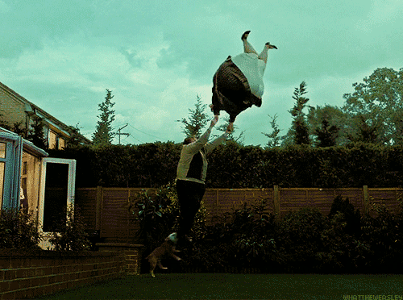

The Dursleys

The Dursleys were an unremarkable muggle family from Little Whinging that raised Harry for much of his childhood. Dudley Dursley, seen above, had little love lost with his cousin Harry.
Petunia Dursley, Harry's aunt and his mother's sister, begrudgingly agreed to take Harry when Lord Voldemort murdered his family in their Godric's Hollow home.

 No Post On Sundays
Vernon Dursley, Harry's uncle, forced Harry to live in a cupboard under the stairs for his entire life at the 4 Privet Drive. Harry liked him the least and once inflated Vernon's sister like a balloon when he was only 13.
